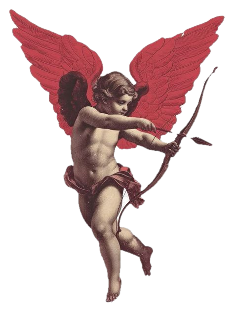

Duane dans la zone
Que le temps passe et tout s'en va (yeah)
Eh, le temps passe et tout s'en va
Découpe de malade, j'enfume la salade et je pense, j'me suis réveillé, t'étais pas là
Demande pas si ça va, sur mon cœur, tu laisses des balafres
Ton visage éclairé par les lampadaires de Paname (wow)
On s'est déchirés pour la vida sans raison valable
Moi, les miens sont vaillants, samuraï, j'ai caché ma lame (hey, yeah, yeah), j'ai caché ma lame
Trafic dans l'école, tas d'pilons dans les collages, papillons dans l'estomac
Marche vite ou la faucheuse rapplique, dans la zone
J'm'applique, y a le temps qui passe vite sur la montre, ah shit
Les roses que j'ai ramené sont fanées
Et toutes les promesses s'échappent en l'air comme le vent (comme le vent)
Les doses que j'ai préparées sont calées, des fois, j'me promène où j'te voyais avant
Diamants sur les dents, j'sais même plus pourquoi tu m'attends
Les démons qui viennent pour t'accompagner dans la danse (wow)
Comme ça qu'on avance, comme ça qu'on avancera (yeah)
Fais-le pour le tit-pe qui rêve de partir en cances-va
Captain Patate, sur ma vie, j'ai foncé dans l'tas
On est en face, elle marchait seule, lasse, dans une allée longue
Elle a lâché son gars, est-ce qu'il valait son âme?
Elle a lâché son gars, est-ce qu'il valait son âme?
Chemins sont différents mais nos regards se sont croisés
Elle écoute personne, pourquoi t'essayes de l'apprivoiser?
J't'ai vu t'apitoyer, j't'ai vu penser, regarder en l'air, jamais plus danser
On tourne dans les soirées comme des ambulanciers
Elle sent plus l'amphét', elle veut s'sentir en vie
Sortir en ville, faire des efforts en vain
J'me rappelle que le temps passe et tout s'en va, R-E-S-val, wow (wow)
J'me rappelle que... (j'me rappelle que...)
J'me rappelle que le temps passe et tout s'en va (yeah, yeah)
J'me rappelle que... (j'me rappelle que...)
J'me rappelle que... (j'me rappelle que...)
J'me rappelle que le temps passe et tout s'en va
J'ai bossé chaque soir, faut qu'tu sortes de ma vie (yeah)
J'regarde au loin, j'vois les hordes de navires
Au levé du jour, les soldats seront aux portes de la ville
Faut qu'on m'sauve de la mort ou qu'on m'sauve de la vie
Faut qu'on sorte de la vite, le combat des anges et les forces de la nuit
Le reflet du shinigami qui s'approche de la vitre
Elle est parfois belle mon époque, je la vis, on est pauvres, cela dit
Y a des clopes, de la tise (yeah), loin des cops, on navigue
Ça consomme de la weed, là j'ai trop d'choses à dire
Dégâts post-traumatiques, rapplique automatiquement
Tout ça m'attriste, c'est la mélo' d'ma vie
On est perdus sur la route, beaucoup d'chemin on a marché
Mais pourquoi on s'est attachés? br
Trahi par tes semblables, trahi par les autres (quoi)
On s'était parlé en classe, j'étais pas présentable
Suivi par les gendarmes, sirop dans les entrailles
Tu parlais à Dieu pour qu'il te libère de tes entraves
Tu parlais à Dieu (Dieu, Dieu, tu parlais à Dieu)
Flag, on arrose les 'tasses, on s'est promis des choses mais les paroles s'effacent
Les filles autour de moi t'ont rendu paro, ces 'tasses
J'écris comme un poète, ces petits carottent mes phases
Mes rimes dessinent ton corps sensuellement 
Les flèches du Cupidon visent ton cœur essentiellement
Ma ste-ve, j'suis stylé, dedans le bât', on a rimé devant
J'sais qu'on a prié, j'sais qu'on va crier je sens,
j'me fais maquiller, je pète deux joints d'affilés
Je pense trop à la vie et la mort, le sablier demande
Ma lame pourrait scier le vent, les hommes viendront plier le camp , j'avance sous oublier le temps,
recompter les billets de banque (wow, wow)
J'me rappelle que... (j'me rappelle que...)
J'me rappelle que le temps passe et tout s'en va (va, va)
J'me rappelle que... (yeah)
J'me rappelle que...
J'me rappelle que le temps passe et tout s'en va (va, va)